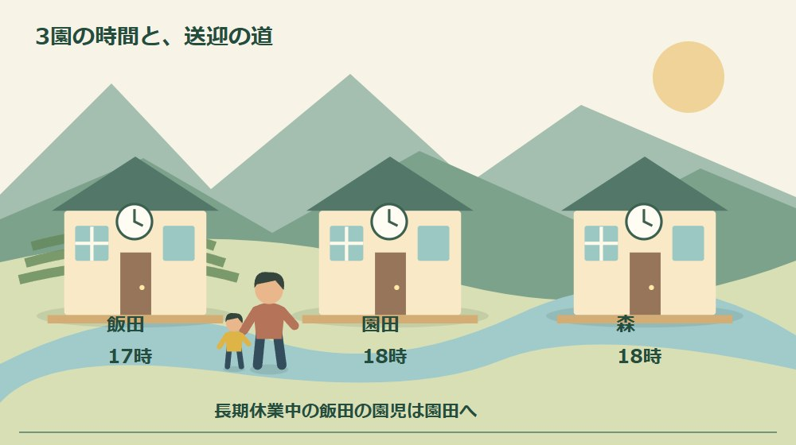
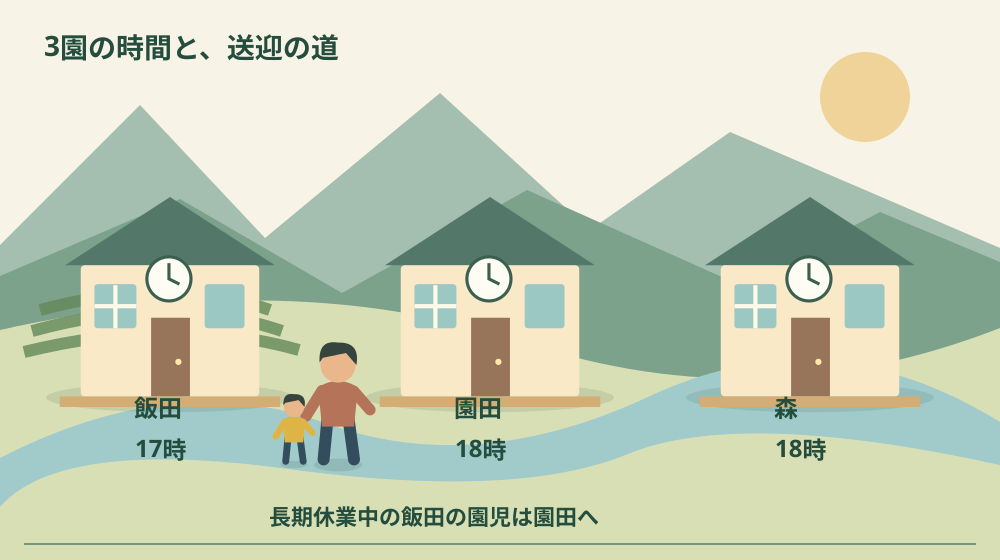
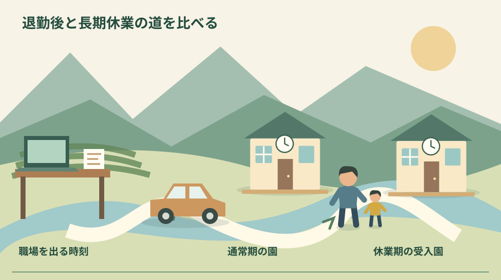

森町の幼稚園預かり保育｜3園の時間を比較

Q. 森町の幼稚園は、仕事が終わるまで預かってもらえる？
2027年度の学期中の預かり保育は、飯田幼稚園が17時、園田・森幼稚園が18時までです。長期休業中、飯田の園児は園田で受け入れます。申込みは2026年10月16日まで。新年少児は例年5月頃からの受入れで、休業期の最終日等は16時までの場合もあります。今日は退勤時刻に移動時間を足し、迎えの時刻と照合してください。
迎えに行く人の時計から、園を比べる
森町の幼稚園の預かり保育は、園の先生方が子どもを見守り、家族が送り迎えすることで成り立っています。保護者が職場を出てから園へ着くまでにも時間がかかります。終了時刻の数字だけで比べると、毎日の移動を担う人の負担と、園で待つ子どもの一日が見えなくなります。
大石浩之（磐田市／不動産業）です。私は、子育て世帯の住まいを考えるとき、家から園までの近さだけでは足りないと考えます。退勤後の職場から園まで、長期休業中の別の受入園までを見る。暮らしが回るかどうかは、その二つの道で変わります。
この記事は、2027年度の入園や森町への転入を検討する保護者向けです。町の「令和9年度 森町立幼稚園預かり保育の申込みについて」を2026年10月4日に確認しました。今回は飯田・園田・森の3園の時間と、長期休業中の送迎に絞って比べます。
通常の入園書類の整理は、森町の幼稚園申込み2027の記事にあります。以前の記事で未確認としていた翌年度の預かり時間は、今回の公式案内で確認できました。入園と預かり保育を同じ申込みだと考えず、利用する時間の申請も別に確かめてください。
事実整理｜3園の学期中と長期休業中の時間
2027年度の学期中の預かり保育は、飯田幼稚園が教育時間終了後から17時までです。園田幼稚園と森幼稚園は教育時間終了後から18時まで。表の終了時刻を比べると1時間の差がありますが、始まりは各園の教育時間が終わった後です。一日の教育時間を推測して固定しません。
長期休業中は、飯田幼稚園では実施せず、園田幼稚園で園児を受け入れます。園田幼稚園と森幼稚園の受入時間は8時30分から18時までです。飯田に通う子どもは、通常期と休業期で預ける場所が変わる案内です。時間と場所の両方を比較表に入れる理由がここにあります。
| 園 | 学期中 | 長期休業中 |
|---|---|---|
| 飯田 | 教育時間終了後〜17時 | 飯田では実施なし。園田で受入れ |
| 園田 | 教育時間終了後〜18時 | 8時30分〜18時 |
| 森 | 教育時間終了後〜18時 | 8時30分〜18時 |
森幼稚園には7時45分から8時30分までの教育時間開始前の預かりもあります。朝の出勤に合わせたい家庭には検討材料になります。ただし、朝の枠があることだけで年間の全日程に使えると決めず、希望する時期の利用区分と実施日を園へ確認してください。
町は、春・夏・冬休みの最終日等に16時までの預かりとなる場合を明記しています。在園児数によって預かり保育を実施しない園となる場合もあります。表の18時を、年度内の全日に共通する保証として読むことはできません。園からのおたより等で実施予定を確かめます。
預かりを実施しない日の予定には、土日祝、8月12〜15日、12月29日〜1月5日、振替休日、その他園長が定める日が挙げられています。会社の休日と一致するとは限りません。家庭の年間カレンダーへ、会社の休みとは別の色で写すと、預け先が必要な日が見えてきます。

10月16日までの申込みと、4月の受入れは別
預かり保育申請書の一斉申込期間は2026年9月14日から10月16日です。健康こども課の窓口受付は平日8時30分〜12時、13時〜17時。昼休みの12時台に行けば提出できるとは考えず、仕事の休憩や休暇と重ねて、行ける時間帯を先に選びます。
町の令和9年度入園案内は、入園そのものには電子申請を用意しています。一方、預かり保育は電子申請を受け付けず、直接窓口へ申し込むと明記しています。同じ年度、同じ締切日でも提出方法が違います。入園の送信完了画面を保存しただけで、預かりも済んだことにはなりません。
新年少児の預かり保育は、例年5月頃から受入れを始めると町が説明しています。基本的生活習慣、園生活のリズム、情緒の安定、教師との信頼関係を考慮するためです。4月に入園すれば、その日から17時や18時まで利用できると想定しない方がよい箇所です。
すでに保育経験があり、排泄、食事、衣服の着脱などの基本的な自立ができている園児は、園の判断で開始する説明もあります。保護者ができると感じることと、集団生活での受入判断は分けます。過去の保育経験を伝え、希望する開始日を園へ相談するための条件です。
復職する月を考える場合は、森町の慣らし保育と復職を整理した記事も参考になります。ただし、保育園の慣らしと幼稚園の預かり開始を同じ制度として扱いません。今回の幼稚園でいつから何時間使えるかを、勤務先との調整より前に確認します。
年度途中の申請も可能と町は案内しています。利用希望日等の前月20日までに書類を提出し、入園前は健康こども課、入園後は在籍園で受け付ける説明です。年度途中だから当日の申込みで使えるという意味ではありません。転入予定が動く家庭は、希望日と申請先を一緒にメモします。
退勤時刻に移動時間を足して、迎えを試算する
幼稚園の終了時刻と比較するのは、勤務先で仕事が終わる時刻ではなく、迎えに到着する時刻です。私は、退勤、職場を出る準備、駐車場までの移動、運転、園での受渡しを分けて書く方法を勧めます。経路検索に出る走行時間だけでは、一日の終わりの動きを全部は表せません。
たとえば17時退勤で、職場を出る準備に10分、移動に25分かかると仮定します。単純な合計でも園に着くのは17時35分です。この例は実際の森町の所要時間ではありません。飯田の17時には合わず、18時の園でも残業や交通の遅れを考える余地が必要だと分かります。
自宅から近い園でも、勤務先からは遠回りになる場合があります。帰りに買い物を入れるなら、迎えの前か後かでも違います。候補の住まい、職場、園を一つの地図に置き、実際に使う時間帯の経路を確認してください。送迎担当が変わる日は、その人の出発地点で計算します。
飯田の園児が長期休業中に園田へ通う場合は、通常期の経路をそのまま使えません。町の入園案内で所在地を確認すると、飯田幼稚園は森町飯田4058-1、園田幼稚園は谷中513-6です。森幼稚園は森2320。住所を入れ替えて、朝と帰りの両方を確かめます。
引越し月を選ぶ段階なら、子連れ移住の時期と手続きの整理も役立ちます。家の引渡し、親の仕事、子どもの入園が同じ日に整うとは限りません。短い期間の送迎を誰が担うかまで考え、祖父母や親族が毎日動けると先に決めないことです。
良い点｜時間と例外を比べる資料がある
森町の預かり保育案内で私が評価するのは、3園の学期中と長期休業中を一つの表で比較できる点です。17時か18時かだけでなく、飯田の園児の受入場所まで書かれています。住まいを探す人が、普段の近さと休み中の移動を別々に検討するための材料になります。
新年少児の開始時期について、例年5月頃という説明と、保育経験による園判断が併記されていることも助かります。私は、4月に使えると誤解してから勤務を調整するより、先に相談できる方が家族の負担を減らすと考えます。子どもが園に慣れる時間も計画の一部として扱えます。
年度途中の申請先と前月20日という期限が示されている点も、転入時期が一斉申込に合わない家庭の入口になります。私は、転居が決まっていないから何もできないと待つより、希望する利用月と書類の準備を相談する方がよいと考えます。利用できると先走らず、確認を進める余地があります。
電子申請と窓口提出の違いが書かれていることも、行動へつながる情報です。制度があるだけでは、仕事中の保護者は手続きできません。私は、行ける曜日と時間を決め、必要な書類を一度に持っていく段取りへ翻訳して初めて、案内が暮らしに役立つと考えます。
注文したい点｜18時だけでは仕事の約束を決められない
預かり保育で私がもう一段知りたいのは、16時までになる具体的な日と、各園の実施が確定する時期です。町は変更の可能性と園のおたよりの確認を案内していますが、働き方を決める家庭には年間予定との照合が必要です。分からない部分は保証された時間へ含めず、確認待ちとして残します。
開始が例年5月頃という説明も、家庭ごとの開始日を決めるものではありません。私は、4月の何日から使えるかを一律に答えてほしいとは考えません。子どもの状態が違うからです。ただ、いつ、誰へ、どの情報を伝えれば相談できるかが見えると、保護者も園もやり取りを進めやすくなります。
預かりが実施されない日に、家族の一人だけが仕事を休む前提も見直したいところです。交代できる送迎担当、勤務時間の調整、利用可能な別の預け先を、無理のない範囲で探します。今回の資料だけで代替サービスの受入れを保証できません。今日できることは、休めない日を一つ予定表に書くことです。
園の先生方へ終了時刻を毎回延ばしてもらうことで、移動の穴を埋める計画は組めません。私は、間に合わない経路なら、家族の担当か働く時間を先に調整すべきだと考えます。制度を広げる希望と、現在の条件で守れる約束は分ける。子どもを待たせる時間と担い手の負担を軽く見ないためです。

費用は、時間の区分と一緒に確かめる
町の案内では、年間預かり保育は月額5,000円、7月と3月は3,000円です。学期中に月10日以上利用するなどの区分があります。長期休業中の預かりは半日500円、1日1,000円。延長預かりには日額100円と示されています。時間の長さだけでなく、使う日数と区分で読みます。
一時預かりも別区分です。町は学期中の月10日未満、長期休業中の月5日未満などを説明しています。ここで各料金を単純に足して家族の請求額を断定することはできません。朝と夕方の延長、長期休業の利用日、利用区分の組合せを伝え、園か健康こども課に確認します。
保育の必要性の認定を受けた人については、預かり保育料が無償になる案内があります。別途申請書や就労証明書が必要で、原則として在籍園を経由する説明です。入園の保育料が無料だから、預かりも申請なしで無料と考えないことです。個別の認定や負担は担当窓口へ確かめてください。
私は、費用表の横に、迎えを担当する人の移動回数も書きたいと考えます。料金だけが低くても、家族の仕事を毎回中断するなら別の負担が生まれます。逆に、時間が合い、無理のない経路が組めるなら、利用区分を正しく申請することで暮らしを組み立てやすくなります。
対案・結論｜今日は退勤時刻と照合する
預かり保育を検討する今日の一歩は、通常の退勤時刻を一つ書き、園までの移動を足すことです。飯田なら17時、園田・森なら18時と比べます。正確な経路がまだ分からなければ、勤務先と候補園の住所を控えるだけでも構いません。まず比較する数字を自分の生活から出します。
次に同じ表を長期休業用にも作ります。飯田の園児なら受入場所を園田へ変え、朝8時30分と帰り18時に合わせられるか見ます。16時までになる日や実施しない日の確認欄を別に置けば、通常の週だけで判断した計画になりません。家族が代わる日も同じ表で確認できます。
問い合わせ先は健康こども課幼稚園保育園係、電話0538-86-6300です。子どもの学年、希望園、希望する開始月、必要な朝夕の時間を先に伝えます。新年少児なら保育経験と受入開始の相談も加えます。質問を一つずつ分けると、書類、園判断、実施予定を混同せず控えられます。
家族に残す記録｜送迎の代役にも分かる形へ
送迎の記録には、園名、住所、預ける時刻、迎えの時刻、担当者、連絡先を書きます。通常期と長期休業期は別の行にします。主担当が分かっていても、代わりに迎えへ行く家族が古い園名を見て動けば行き違いになります。変更した日付を一緒に残してください。
子どもの情報は、送迎に必要な範囲だけ共有します。申請書類や就労証明書を家族全員の連絡グループへ無差別に送る必要はありません。園への連絡方法や代理の迎えの扱いは、実際の園の案内に従います。予定を共有することと、個人情報を広く配ることは分けます。
大石の視点｜家からの距離より、一日のつながりを見る
私は、18時まで預けられることと、18時に迎えに行けることは別だと考えます。制度の時間が長くても、家族の経路が合わなければ毎日が苦しくなります。園の支えを活かすために、職場、車、受入場所を一枚に載せる。子育て移住の条件は、家賃と部屋数だけでは決まりません。
正直に言えば、終了時刻を優先して園を選ぶだけでよいのか、私にも迷いがあります。子どもと園の相性、家族が望む過ごし方もあるからです。ただ、迎えが続けられない条件を曖昧にしたまま選ぶことは避けたい。時刻で候補を絞り、その上で園へ話を聞く順番を私は勧めます。
住まい探しでも、通常の平日だけでなく、休みの期間に家族がどう動くかを見ると条件が変わります。飯田から園田へ受入場所が変わる案内は、その具体例です。森町で子育てを支える人の努力を、保護者が無理なく利用できる形へつなぐために、今日は退勤後の一本の道を確認してください。
まとめ｜通常期と長期休業期を別々に比べる
森町の2027年度幼稚園預かり保育は、学期中が飯田17時、園田・森18時までです。飯田の園児は長期休業中に園田で受入れます。新年少児の開始時期、16時までになる日、実施しない日もあり、通常の表だけで全日程の仕事を約束しないようにしてください。
2026年10月16日の申込期限に向け、今日は退勤と移動を一度計算します。入園とは別に預かりの窓口申請を確認し、必要な期間と時間を伝えます。家族の仕事と園の見守りを同じ予定表へ置くことが、無理のない送迎を考える出発点になります。
よくある質問
飯田幼稚園は夏休みも同じ園へ迎えに行きますか？
2027年度の町の案内では、飯田幼稚園は長期休業中の預かりを実施せず、園田幼稚園で園児を受け入れます。園田・森幼稚園の長期休業中の時間は8時30分〜18時です。休業期の最終日等は16時までになる場合があります。日程と受入れの実施は園のおたより等でも確認し、通常期と異なる送迎経路を用意してください。
新年少児は4月の入園直後から預かり保育を使えますか？
町は新年少児の受入れを例年5月頃からと説明しています。生活習慣、園生活のリズム、情緒の安定、教師との関係を考慮するためです。保育経験があり、排泄・食事・着替え等の自立ができている場合は園の判断で開始します。4月から一律に利用できると想定せず、個別の開始時期と家族の勤務を園へ相談してください。
入園の電子申請をすれば、預かり保育も申込み済みですか？
通常の幼稚園入園申込みと預かり保育の申込みは別です。令和9年度の入園案内には、預かり保育は電子申請を受け付けず、直接窓口へ申し込むとあります。一斉申込期間は2026年9月14日〜10月16日です。窓口受付は平日8時30分〜12時、13時〜17時。利用区分と必要書類を確認して提出してください。
実家や土地の資料を家族で整理する場合は、実家カルテも利用できます。売却未定でも使える本サイト運営会社の民間サービスです。森町や各団体の公式手続ではなく、利用は任意です。
公式情報源
2026年10月4日確認（2026年10月確認）。制度・数値・受付や利用条件は変わる場合があります。行動前に公式の最新案内を確認してください。個別の契約・税務・認定等の判断は担当窓口や専門家へ相談してください。